전기산업기사 (2017-05-07 기출문제)
1과목: 전기자기학
1. 전기력선의 기본 성질에 관한 설명으로 틀린 것은?
- 전기력선의 방향은 그 점의 전계의 방향과 일치한다.
- 전기력선은 전위가 높은 점에서 낮은 점으로 향한다.
- 전기력선은 그 자신만으로도 폐곡선을 만든다
- 전계가 0 이 아닌 곳에서는 전기력선은 도체표면에 수직으로 만난다
(정답률: 82%)

2. 동일용량 C[㎌]의 콘덴서 n개를 병렬로 연결 하였다면 합성용량은 얼마인가?
- n2C
- nC
- C/n
- C
(정답률: 85%)
3. 반지름 r=1[m]인 도체구의 표면 전하밀도가
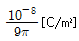
이 되도록 하는 도체구의 전위는 몇 [V]인가?- 10
- 20
- 40
- 80
(정답률: 54%)
4. 도전율의 단위로 옳은 것은?(일부 컴퓨터에서 특수 기호가 보이지 않아서 괄호뒤에 한글 발음으로 다시 표기하여 둡니다.)
- m/Ω
- Ω/m2
- 1/℧(모)∙m
- ℧(모)/m
(정답률: 69%)
5. 여러 가지 도체의 전하 분포에 있어서 각 도체의 전하를 n배 할 경우 중첩의 원리가 성립하기 위해서는 그 전위는 어떻게 되는가?
 배가 된다.
배가 된다.- n배가 된다.
- 2n배가 된다.
- n2배가 된다.
(정답률: 76%)
6. A=i+4j+3k, B=4i+j2-4k의 두 벡터는 서로 어떤 관계에 있는가?
- 평행
- 면적
- 접근
- 수직
(정답률: 79%)
7. 전류가 흐르는 도선을 자계 내에 놓으면 이 도선에 힘이 작용한다. 평등자계의 진공 중에 놓여 있는 직선전류 도선이 받는 힘에 대한 설명으로 옳은 것은?
- 도선의 길이에 비례한다.
- 전류의 세기에 반비례한다.
- 자계의 세기에 반비례한다.
- 전류와 자계 사이의 각에 대한 정현(sine)에 반비례한다.
(정답률: 77%)
8. 영역 1의 유전체
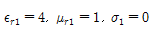
과 영역 2의 유전체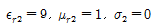
때 영역 1에서 영역 2로 입사된 전자파에 대한 반사계수는?- -0.2
- -0.5
- 0.2
- 0.8
(정답률: 51%)
9. 정전용량이 0.5[㎌], 1[㎌]인 콘덴서에 각각 2×10-4[C] 및 3×10-4[C]의 전하를 주고 극성을 같게 하여 병렬로 접속할 때 콘덴서에 축적된 에너지는 약 몇 [J]인가?
- 0.042
- 0.063
- 0.083
- 0.126
(정답률: 58%)
10. 정전용량 및 내압이 3㎌/1000V, 5㎌/500V, 12㎌/250V 인 3개의 콘덴서를 직렬로 연결하고 양단에 가한 전압을 서서히 증가시킬 경우 가장 먼저 파괴되는 콘덴서는?
- 3[㎌]
- 5[㎌]
- 12[㎌]
- 3개 동시에 파괴
(정답률: 79%)
11. 정전용량 10[㎌]인 콘덴서의 양단에 100V의 일정 전압을 인가하고 있다. 이 콘덴서의 극판간의 거리를 1/10로 변화시키면 콘덴서에 충전되는 전하량은 거리를 변화시키기 이전의 전하량에 비해 어떻게 되는가?
- 1/10로 감소
- 1/100로 감소
- 10배로 증가
- 100배로 증가
(정답률: 75%)
12. 접지 구도체와 점전하간의 작용력은?
- 항상 반발력이다.
- 항상 흡입력이다.
- 조건적 반발력이다.
- 조건적 흡입력이다.
(정답률: 85%)
13. 전계의 세기가 1500[V/m]인 전장에 5[μC]의 전하를 놓았을 때 이 전하에 작용하는 힘은 몇 [N]인가?
- 4.5×10-3
- 5.5×10-3
- 6.5×10-3
- 7.5×10-3
(정답률: 73%)
14. 500[AT/m]의 자계 중에 어떤 자극을 놓았을 때 4×103[N]의 힘이 작용했다면 이 때 자극의 세기는 몇 [Wb]인가?
- 2
- 4
- 6
- 8
(정답률: 72%)
15. 도전성을 가진 매질내의 평면파에서 전송계수
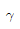
를 표현한 것으로 알맞은 것은? 단, α는 감쇠정수, β는 위상정수 이다.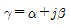
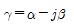
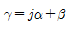
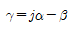
(정답률: 72%)
16. 자극의 세기가 8×10-6[Wb]이고, 길이가 30[cm]인 막대자석을 120[AT/m] 평등자계 내에 자력선과 30°의 각도로 놓았다면 자석이 받는 회전력은 몇 [Nm]인가?
- 1.44×10-4
- 1.44×10-5
- 2.88×10-4
- 2.88×10-5
(정답률: 67%)
17. 자기 회로의 퍼미언스(permeance)에 대응하는 전기회로의 요소는?
- 서셉턴스(susceptance)
- 컨덕턴스(conductance)
- 엘라스턴스(elastance)
- 정전용량(electrostatic capacity)
(정답률: 63%)
18. 전류가 흐르고 있는 도체에 자계를 가하면 도체 측면에 정∙부(+,-)의 전하가 나타나 두 면간에 전위차가 발생하는 현상은?
- 홀효과
- 핀치효과
- 톰슨효과
- 지벡효과
(정답률: 64%)
19. 그림과 같이 직렬로 접속된 두 개의 코일이 있을 때 L1=20[mH], L2=80[mH], 결합계수 k=0.8이다. 여기에 0.5[A]의 전류를 흘릴 때 이 합성코일에 저축되는 에너지는 약 몇 [J]인가?(오류 신고가 접수된 문제입니다. 반드시 정답과 해설을 확인하시기 바랍니다.)
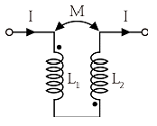
- 1.13×10-3
- 2.⑤×10-2
- 6.63×10-2
- 8.25×10-2
(정답률: 57%)
20. 도체 1을 Q가 되도록 대전시키고, 여기에 도체 2를 접촉했을 때 도체 2가 얻는 전하를 전위계수로 표시하면? (단, P11, P12, P21, P22는 전위계수이다.)
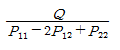
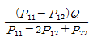
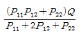
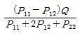
(정답률: 63%)
2과목: 전력공학
21. 개폐서지를 흡수할 목적으로 설치하는 것의 약어는?
- CT
- SA
- GIS
- ATS
(정답률: 76%)
22. 다음 중 표준형 철탑이 아닌 것은?
- 내선 철탑
- 직선 철탑
- 각도 철탑
- 인류 철탑
(정답률: 66%)
23. 전력계통의 전압안정도를 나타내는 P-V 곡선에 대한 설명 중 적합하지 않은 것은?
- 가로축은 수전단 전압을 세로축은 무효전력을 나타낸다.
- 진상무효전력이 부족하면 전압은 안정되고 진상무효전력이 과잉되면 전압은 불안정하게 된다.
- 전압 불안정 현상이 일어나지 않도록 전압을 일정하게 유지하려면 무효전력을 적절하게 공급하여야 한다.
- P-V 곡선에서 주어진 역률에서 전압을 증가시키더라도 송전할 수 있는 최대 전력이 존재하는 임계점이 있다.
(정답률: 64%)
24. 3상으로 표준전압 3[kV], 800[kW]를 역률 0.9로 수전하는 공장의 수전회로에 시설할 계기용 변류기의 변류비로 적당한 것은? ( 단, 변류기의 2차전류는 5[A]이며, 여유율은 1.2로 한다.)
- 10
- 20
- 30
- 40
(정답률: 47%)
25. 발전기나 변압기의 내부고장 검출에 주로 사용되는 계전기는?
- 역상계전기
- 과전압계전기
- 과전류계전기
- 비율차동계전기
(정답률: 81%)
26. 3000[kW], 역률 80[%](뒤짐)의 부하에 전력을 공급하고 있는 변전소에 전력용콘덴서를 설치하여 변전소에서의 역률을 90[%]로 향상시키는데 필요한 전력용콘덴서의 용량은 약 몇 [kVA]인가?
- 600
- 700
- 800
- 900
(정답률: 66%)
27. 역률 0.8인 부하 480[kW]를 공급하는 변전소에 전력용 콘덴서 220[kVA]를 설치하면 역률은 몇 [%]로 개선할 수 있는가?
- 92
- 94
- 96
- 99
(정답률: 64%)
28. 수전단을 단락한 경우 송전단에서 본 임피던스는 300[Ω]이고, 수전단을 개방한 경우에는 1200[Ω]일 때 이 선로의 특성 임피던스는 몇 [Ω] 인가?
- 300
- 500
- 600
- 800
(정답률: 60%)
29. 배전전압, 배전거리 및 전력손실이 같다는 조건에서 단상 2선식 전기방식의 전선 총중량을 100[%]라 할 때 3상 3선식 전기방식은 몇 [%]인가?
- 33.3
- 37.5
- 75.0
- 100.0
(정답률: 55%)
30. 외뢰(外雷)에 대한 주 보호장치로서 송전계통의 절연협조의 기본이 되는 것은?
- 애자
- 변압기
- 차단기
- 피뢰기
(정답률: 74%)
31. 배전선로의 전기적 특성 중 그 값이 1 이상인 것은?
- 전압강하율
- 부등률
- 부하율
- 수용률
(정답률: 82%)
32. 1000[kVA]의 단상변압기 3대를 △-△결선의 1뱅크로 하여 사용하는 변전소가 부하 증가로 다시 1대의 단상변압기를 증설하여 2뱅크로 사용하면 최대 약 몇 [kVA]의 3상 부하에 적용 할 수 있는가?
- 1730
- 2000
- 3460
- 4000
(정답률: 59%)
33. 3300[V] 배전선로의 전압을 6600[V]로 승압하고 같은 손실률로 송전하는 경우 송전전력은 승압전의 몇 배인가?
- √3
- 2
- 3
- 4
(정답률: 52%)
34. 송전선로에 근접한 통신선에 유도장해가 발생하였다. 전자유도의 주된 원인은?
- 영상전류
- 정상전류
- 정상전압
- 역상전압
(정답률: 80%)
35. 기력발전소의 열사이클 과정 중 단열팽창 과정에서 물 또는 증기의 상태변화로 옳은 것은?
- 습증기 → 포화액
- 포화액 → 압축액
- 과열증기 → 습증기
- 압축액 → 포화액 → 포화증기
(정답률: 68%)
36. 3상 배전선로의 전압강하율[%]을 나타내는 식이 아닌 것은? (단, Vs : 송전단 전압, VT : 수전단 전압, I : 부하전류, P : 부하전력, Q : 무효전력 이다.)
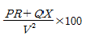
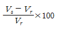
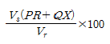
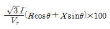
(정답률: 54%)
37. 송전선로의 보호방식으로 지락에 대한 보호는 영상전류를 이용하여 어떤 계전기를 동작 시키는가?
- 선택지락 계전기
- 전류차동 계전기
- 과전압 계전기
- 거리 계전기
(정답률: 73%)
38. 경수감속 냉각형 원자로에 속하는 것은?
- 고속증식로
- 열중성자로
- 비등수형 원자로
- 흑연감속 가스 냉각로
(정답률: 67%)
39. 장거리 송전선로의 특성을 표현한 회로로 옳은 것은?
- 분산부하 회로
- 분포정수 회로
- 집중정수 회로
- 특성 임피던스 회로
(정답률: 71%)
40. 배전선로에 3상3선식 비접지방식을 채용할 경우 장점이 아닌 것은?
- 과도 안정도가 크다.
- 1선 지락고장시 고장전류가 작다.
- 1선 지락고장시 인접 통신선의 유도장해가 작다.
- 1선 지락고장시 건전상의 대지전위 상승이 작다.
(정답률: 42%)
3과목: 전기기기
41. 직류기에서 전기자 반작용의 영향을 설명한 것으로 틀린 것은?
- 주자극의 자속이 감소한다.
- 정류자편 사이의 전압이 불균일하게 된다.
- 국부적으로 전압이 높아져 섬락을 일으킨다.
- 전기적 중성점이 전동기인 경우 회전방향으로 이동한다.
(정답률: 61%)
42. 6300/210[V], 20[kVA] 단상변압기 1차 저항과 리액턴스가 각각 15.2[Ω]과 21.6[Ω], 2차 저항과 리액턴스가 각각 0.019[Ω]과 0.028[Ω]이다. 백분율 임피던스는 약 몇 [%] 인가?
- 1.86
- 2.86
- 3.86
- 4.86
(정답률: 49%)
43. 권선형 유도전동기의 속도제어 방법 중 저항제어법의 특징으로 옳은 것은?
- 효율이 높고 역률이 좋다.
- 부하에 대한 속도 변동률이 작다.
- 구조가 간단하고 제어조작이 편리하다.
- 전부하로 장시간 운전하여도 온도에 영향이 적다.
(정답률: 71%)
44. 직류 분권전동기의 공급전압이 극성을 반대로 하면 회전방향은 어떻게 되는가?
- 반대로 된다.
- 변하지 않는다.
- 발전기로 된다.
- 회전하지 않는다.
(정답률: 64%)
45. 단상 50[Hz], 전파정류 회로에서 변압기의 2차 상전압 100[V], 수은 정류기의 전압강하 20[V]에서 회로 중의 인덕턴스는 무시한다. 외부부하로서 기전력 50[V], 내부저항 0.3[Ω]의 축전지를 연결할 때 평균 출력은 약 몇 [W]인가?
- 4556
- 4667
- 4778
- 4889
(정답률: 44%)
46. 3상 동기발전기의 여자전류 5[A]에 대한 1상의 유기기전력이 600[V]이고 그 3상 단락전류는 30[A]이다. 이 발전기의 동기임피던스[Ω]는?
- 10
- 20
- 30
- 40
(정답률: 61%)
47. 동기발전기의 전기자 권선을 단절권으로 하는 가장 큰 이유는?
- 과열을 방지
- 기전력 증가
- 기본파를 제거
- 고조파를 제거해서 기전력 파형 개선
(정답률: 77%)
48. 권선형 유도전동기가 기동하면서 동기속도 이하까지 회전속도가 증가하면 회전자의 전압은?
- 증가한다.
- 감소한다.
- 변함없다.
- 0 이 된다.
(정답률: 46%)
49. 3상 직권 정류자 전동기의 중간변압기의 사용목적은?
- 역회전의 방지
- 역회전을 위하여
- 전동기의 특성을 조정
- 직권 특성을 얻기 위하여
(정답률: 60%)
50. 전기자 지름 0.2[m]의 직류발전기가 1.5[kW]의 출력에서 1800[rpm]으로 회전하고 있을 때 전기자 주변속도는 약 몇 [m/s]인가?
- 18.84
- 21.96
- 32.74
- 42.85
(정답률: 63%)
51. 2방향성 3단자 사이리스터는?
- SCR
- SSS
- SCS
- TRIAC
(정답률: 60%)
52. 동기전동기의 특징으로 틀린 것은?
- 속도가 일정하다.
- 역률을 조정할 수 없다.
- 직류전원을 필요로 한다.
- 난조를 일으킬 염려가 있다.
(정답률: 66%)
53. 정격 주파수 50[Hz]의 변압기를 일정 전압 60[Hz]의 전원에 접속하여 사용했을 때 여자전류, 철손 및 리액턴스 강하는?
- 여자전류와 철손은 5/6 감소, 리액턴스 강하 6/5 증가
- 여자전류와 철손은 5/6 감소, 리액턴스 강하 5/6 감소
- 여자전류와 철손은 6/5 증가, 리액턴스 강하 6/5 증가
- 여자전류와 철손은 6/5 증가, 리액턴스 강하 5/6 감소
(정답률: 58%)
54. 어떤 주상 변압기가 4/5 부하일 때 최대효율이 된다. 전부하에 있어서의 철손과 동손의 비 Pc/Pi는 약 얼마인가?
- 0.64
- 1.56
- 1.64
- 2.56
(정답률: 51%)
55. 직류기의 손실 중 기계손에 속하는 것은?
- 풍손
- 와전류손
- 히스테리시스손
- 브러시의 전기손
(정답률: 66%)
56. 직류기에서 양호한 정류를 얻는 조건으로 틀린 것은?
- 정류 주기를 크게 한다.
- 브러시의 접촉 저항을 크게 한다.
- 전기자 권선의 인덕턴스를 작게 한다.
- 평균 리액턴스 전압을 브러시 접촉면 전압강하보다 크게 한다.
(정답률: 58%)
57. 동기전동기의 제동권선은 다음 어느 것과 같은가?
- 직류기의 전기자
- 유도기의 농형 회전자
- 동기기의 원통형 회전자
- 동기기의 유도자형 회전자
(정답률: 48%)
58. 권선형 3상 유도전동기의 2차 회로는 Y로 접속되고 2차 각 상의 저항은 0.3[Ω]이며 1차, 2차 리액턴스의 합은 1.5[Ω]이다. 기동 시에 최대 토크를 발생하기 위해서 삽입하여야 할 저항[Ω]은? ( 단, 1차 각 상의 저항은 무시한다.)
- 1.2
- 1.5
- 2
- 2.2
(정답률: 43%)
59. 3상 유도전압조정기의 특징이 아닌 것은?
- 분로권선에 회전자계가 발생한다.
- 입력전압과 출력전압의 위상이 같다.
- 두 권선은 2극 또는 4극으로 감는다.
- 1차 권선은 회전자에 감고 2차 권선은 고정자에 감는다.
(정답률: 50%)
60. 변압기의 부하가 증가할 때의 현상으로서 틀린 것은?
- 동손이 증가한다.
- 온도가 상승한다.
- 철손이 증가한다.
- 여자전류는 변함없다.
(정답률: 59%)
4과목: 회로이론
61. 어떤 회로망의 4단자 정수가 A=8, B=j2, D=3+j2이면 이 회로망의 C는?
- 2+j3
- 3+j3
- 24+j14
- 8-j11.5
(정답률: 61%)
62. 다음과 같은 회로에서 i1=Imsinwt[A]일 때, 개방된 2차 단자에 나타나는 유기기전력e2는 몇 [V]인가?
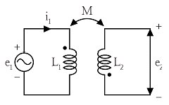
- wMImsin(wt-90°)
- wMImcos(wt-90°)
- -wMsinwt
- -wMcoswt
(정답률: 47%)
63. 다음 회로에서 부하 R에 최대 전력이 공급될 때의 전력값이 5[W]라고 하면 RL+Ri의 값은 몇 [Ω] 인가? (단, Ri는 전원의 내부저항이다.)
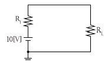
- 5
- 10
- 15
- 20
(정답률: 46%)
64. 부동작 시간(dead time) 요소의 전달함수는?
- K
- K/s
- Ke-Ls
- Ks
(정답률: 73%)
65. 회로의 양 단자에서 테브난의 정리에 의한 등가회로로 변환할 경우 Vab 전압과 테브난 등가저항은?
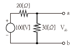
- 60[V], 12[Ω]
- 60[V], 15[Ω]
- 50[V], 15[Ω]
- 50[V], 50[Ω]
(정답률: 73%)
66. 저항 R[Ω], 리액턴스 X[Ω]와의 직렬회로에 교류전압 V[V]를 가했을 때 소비되는 전력[W]은?
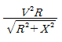
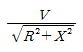
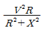
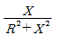
(정답률: 49%)
67. 그림과 같은 회로에서 V1(s)를 입력, V2(s) 출력으로 한 전달함수는?
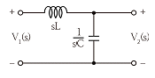
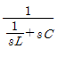
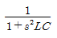
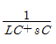
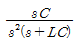
(정답률: 59%)
68. RLC 직렬회로에서 각주파수 w를 변화시켰을 때 어드미턴스의 궤적은?
- 원점을 지나는 원
- 원점을 지나는 반원
- 원점을 지나지 않는 원
- 원점을 지나지 않는 직선
(정답률: 58%)
69. 대칭 6상 기전력의 선간전압과 상기전력의 위상차는?
- 120°
- 60°
- 30°
- 15°
(정답률: 58%)
70. RL 병렬회로에 양단에 e=Emsin(wt+θ)[V]의 전압이 가해졌을 때 소비되는 유효전력[W]은?
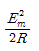
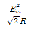
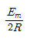
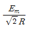
(정답률: 49%)
71. 2단자 회로 소자 중에서 인가한 전류파형과 동위상의 전압파형을 얻을 수 있는 것은?
- 저항
- 콘덴서
- 인덕턴스
- 저항+콘덴서
(정답률: 58%)
72. 다음과 같은 교류 브리지 회로에서 Z0에 흐르는 전류가 0이 되기 위한 각 임피던스의 조건은?
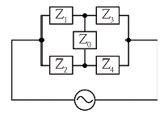
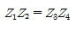
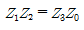
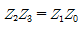
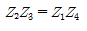
(정답률: 75%)
73. 불평형 3상 전류가 Ia=15+j2[A], Ib=-20-j14[A], Ic=-3+j10[A] 일 때의 영상전류 I0[A]는?
- 1.57-j3.25
- 2.85+j0.36
- -2.67-j0.67
- 12.67+j2
(정답률: 72%)
74. 회로에서 L=50[mH], R=20[kΩ]인 경우 회로의 시정수는 몇 [㎲]인가?
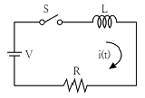
- 4.0
- 3.5
- 3.0
- 2.5
(정답률: 69%)
75. 주기적인 구형파 신호의 구성은?
- 직류성분만으로 구성된다.
- 기본파 성분만으로 구성된다.
- 고조파 성분만으로 구성된다.
- 직류 성분, 기본파 성분, 무수히 많은 고조파 성분으로 구성된다.
(정답률: 72%)
76.
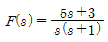
일 때 f(t)의 최종값은?- 3
- -3
- 5
- -5
(정답률: 70%)
77. 다음 미분 방정식으로 표시되는 계에 대한 전달함수는? (단,x(t)는 입력, y(t)는 출력을 나타낸다.)
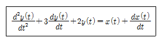
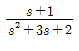
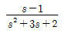
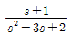
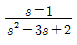
(정답률: 59%)
78. RC 회로에 비정현파 전압을 가하여 흐른 전류가 다음과 같을 때 이 회로의 역률은 약 몇 [%]인가?
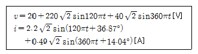
- 75.8
- 80.4
- 86.3
- 89.7
(정답률: 41%)
79. 대칭 좌표법에 관한 설명이 아닌 것은?
- 대칭 좌표법은 일반적인 비대칭 3상 교류회로의 계산에도 이용된다.
- 대칭 3상 전압의 영상분과 역상분은 0 이고, 정상분만 남는다.
- 비대칭 3상 교류회로는 영상분, 역상분 및 정상분의 3성분으로 해석한다.
- 비대칭 3상 회로의 접지식 회로에는 영상분이 존재하지 않는다.
(정답률: 59%)
80. 3상 Y결선 전원에서 각 상전압이 100[V]일 때 선간전압[V]은?
- 150
- 170
- 173
- 179
(정답률: 78%)
5과목: 전기설비기술기준 및 판단 기준
81. 변전소의 주요 변압기에 시설하지 않아도 되는 계측장치는?
- 전압계
- 역률계
- 전류계
- 전력계
(정답률: 73%)
82. 애자사용 공사에 의한 고압 옥내배선을 시설하고자 할 경우 전선과 조영재 사이의 이격거리는 몇 cm 이상인가?
- 3
- 4
- 5
- 6
(정답률: 32%)
83. 특고압 전선로에 접속하는 배전용 변압기의 1차 및 2차 전압은?
- 1차 : 35[kV] 이하, 2차 : 저압 또는 고압
- 1차 : 50[kV] 이하, 2차 : 저압 또는 고압
- 1차 : 35[kV] 이하, 2차 : 특고압 또는 고압
- 1차 : 50[kV] 이하, 2차 : 특고압 또는 고압
(정답률: 55%)
84. 관∙암거∙기타 지중전선을 넣은 방호장치의 금속제 부분(케이블을 지지하는 금구류는 제외한다.) 금속제의 전선 접속함 및 지중전선의 피복으로 사용하는 금속체에 시설하는 접지공사의 종류는?(관련 규정 개정전 문제로 여기서는 기존 정답인 3번을 누르면 정답 처리됩니다. 자세한 내용은 해설을 참고하세요.)
- 제1종 접지공사
- 제2종 접지공사
- 제3종 접지공사
- 특별 제3종 접지공사
(정답률: 56%)
85. 폭연성 분진 또는 화약류의 분말이 전기설비가 발화원이 되어 폭발할 우려가 있는 곳에 시설하는 저압 옥내 전기설비를 케이블 공사로 할 경우 관이나 방호장치에 넣지 않고 노출로 설치할 수 있는 케이블은?
- 미네럴인슈레이션 케이블
- 고무절연 비닐 시스케이블
- 폴리에틸렌절연 비닐 시스케이블
- 폴리에틸렌절연 폴리에틸렌 시스케이블
(정답률: 57%)
86. 지선을 사용하여 그 강도를 분담시켜서는 아니되는 가공전선로 지지물은?
- 목조
- 철주
- 철탑
- 철근콘크리트주
(정답률: 71%)
87. 특고압 가공전선로의 지지물 중 전선로의 지지물 양쪽의 경간의 차가 큰 곳에 사용하는 철탑은?
- 내장형 철탑
- 인류형 철탑
- 보강형 철탑
- 각도형 철탑
(정답률: 75%)
88. 정격전류가 15[A] 이하인 과전류차단기로 보호되는 저압 옥내전로에 접속하는 콘센트는 정격전류가 몇 [A] 이하인 것이어야 하는가?
- 15
- 20
- 25
- 30
(정답률: 54%)
89. 풀용 수중조명등의 시설공사에서 절연변압기는 그 2차측 전로의 사용전압이 몇 [V] 이하인 경우에는 1차권선과 2차권선 사이에 금속제의 혼촉방지판을 설치하여야 하며, 제 몇 종 접지공사를 하여야 하는가?(관련 규정 개정전 문제로 여기서는 기존 정답인 1번을 누르면 정답 처리됩니다. 자세한 내용은 해설을 참고하세요.)
- 30[V], 제1종 접지공사
- 30[V], 제2종 접지공사
- 60[V], 제1종 접지공사
- 60[V], 제2종 접지공사
(정답률: 53%)
90. 수소냉각식 발전기 및 이에 부속하는 수소냉각장치 시설에 대한 설명으로 틀린 것은?
- 발전기안의 수소의 온도를 계측하는 장치를 시설할 것
- 발전기안의 수소의 순도가 70[%] 이하로 저하한 경우에 이를 경보하는 장치를 시설할 것
- 발전기안의 수소의 압력을 계측하는 장치 및 그 압력이 현저히 변동한 경우에 이를 경보하는 장치를 시설할 것
- 발전기는 기밀구조의 것이고 또한 수소가 대기압에서 폭발하는 경우에 생기는 압력에 견디는 강도를 가지는 것일 것
(정답률: 74%)
91. 옥내에 시설하는 전동기에 과부하 보호장치의 시설을 생략할 수 없는 경우는?
- 정격출력이 0.75[kW]인 전동기
- 전동기의 구조나 부하의 성질로 보아 전동기가 소손할 수 있는 과전류가 생길 우려가 없는 경우
- 전동기가 단상의 것으로 전원측 전로에 시설하는 배선용 차단기의 정격전류가 20[A] 이하인 경우
- 전동기가 단상의 것으로 전원측 전로에 시설하는 과전류 차단기의 정격전류가 15[A] 이하인 경우
(정답률: 56%)
92. 가공전선로의 지지물에 시설하는 통신선 또는 이에 직접 접속하는 가공 통신선의 높이에 대한 설명 중 틀린 것은?
- 도로를 횡단하는 경우에는 지표상 6[m] 이상으로 한다.
- 철도 또는 궤도를 횡단하는 경우에는 레일면상 6[m] 이상으로 한다.
- 횡단보도교의 위에 시설하는 경우에는 그 노면상 5[m]이상으로 한다.
- 도로를 횡단하는 경우, 저압이나 고압의 가공전선로의 지지물에 시설하는 통신선이 교통에 지장을 줄 우려가 없는 경우에는 지표상 5[m]까지 감할 수 있다.
(정답률: 57%)
93. 물기가 있는 장소의 저압전로에서 그 전로에 지락이 생긴 경우, 0.5초 이내에 자동적으로 전로를 차단하는 장치를 시설하는 경우에는 자동차단기의 정격감도 전류가 50[mA]라면 제3종 접지공사의 접지저항 값은 몇 [Ω] 이하로 하여야 하는가?(관련 규정 개정전 문제로 여기서는 기존 정답인 3번을 누르면 정답 처리됩니다. 자세한 내용은 해설을 참고하세요.)
- 100
- 200
- 300
- 500
(정답률: 55%)
94. 접지공사의 특례와 관련하여 특별 제3종 접지공사를 하여야 하는 금속체와 대지 간의 전기저항 값이 몇 [Ω] 이하인 경우에는 특별 제3종 접지공사를 한 것으로 보는가?(관련 규정 개정전 문제로 여기서는 기존 정답인 2번을 누르면 정답 처리됩니다. 자세한 내용은 해설을 참고하세요.)
- 3
- 10
- 50
- 100
(정답률: 63%)
95. 아크가 발생하는 고압용 차단기는 목재의 벽 또는 천장, 기타의 가연성 물체로부터 몇 [m] 이상 이격하여야 하는가?
- 0.5
- 1
- 1.5
- 2
(정답률: 51%)
96. 지중 전선로를 관로식에 의하여 시설하는 경우에는 매설 깊이를 몇 [m] 이상으로 하여야 하는가?
- 0.6
- 1.0
- 1.2
- 1.5
(정답률: 47%)
97. 가공 전선로의 지지물이 원형 철근콘크리트주인 경우 갑종 풍압하중은 몇 Pa를 기초로 하여 계산하는가?
- 294
- 588
- 627
- 1078
(정답률: 68%)
98. 100[kV] 미만인 특고압 가공전선로를 인가가 밀집한 지역에 시설할 경우 전선로에 사용되는 전선의 단면적이 몇 [mm2] 이상의 경동연선이어야 하는가?
- 38
- 55
- 100
- 150
(정답률: 58%)
99. 교류식 전기철도는 그 단상부하에 의한 전압불평형의 허용한도가 그 변전소의 수전점에서 몇 [%] 이하이어야 하는가?
- 1
- 2
- 3
- 4
(정답률: 48%)
100. 터널 내에 교류 220[V]의 애자사용 공사로 전선을 시설할 경우 노면으로부터 몇 [m] 이상의 높이로 유지해야 하는가?
- 2
- 2.5
- 3
- 4
(정답률: 49%)
전기력선은 전기장의 방향을 나타내는 선으로, 전기장이 존재하는 영역에서 전기장의 방향에 따라 그려집니다. 따라서 전기력선의 방향은 그 점에서의 전기장의 방향과 일치하며, 전위가 높은 점에서 낮은 점으로 향합니다. 전기력선은 폐곡선을 만들지 않으며, 전기장이 존재하지 않는 곳에서는 그려지지 않습니다. 전기장이 0이 아닌 곳에서는 전기력선은 도체표면에 수직으로 만납니다.